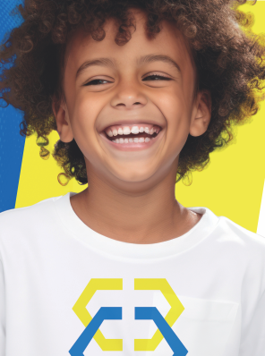

Grupos 3 · 4 · 5
01
Educação Infantil
Em ambientes exclusivos, os alunos desenvolvem suas habilidades desde os três primeiros anos de idade. O trabalho pedagógico se desenvolve por meio de eixos como a pesquisa e as histórias.